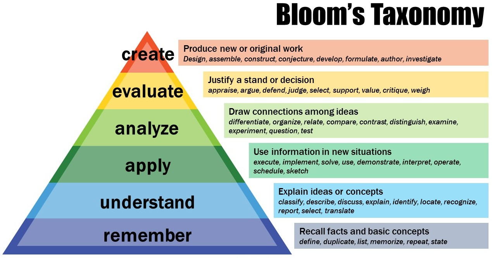
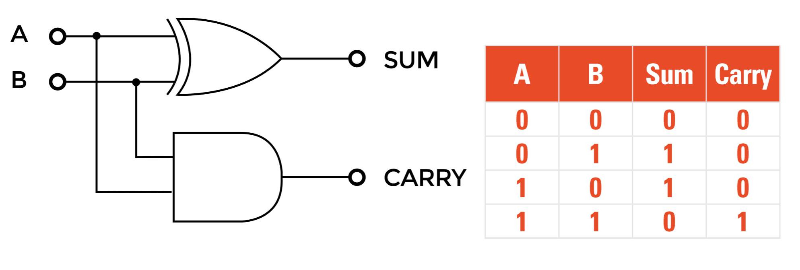

CS250 - Good Morning
Learning to learn
Ideas on education in the US



Discussion
- What is education like in China?
- How do you learn?
- How would you make that better?
- What would make you pay attention in class?
BREAK!
Today we are going to learn to count.
I'm Serious.
Don't worry, you already know how.
We all know how to count.
0,1,2,3,4,...
-
But what happens after 9?
-
We come back around to 1.
9+1=10 -
This is the base ten counting system.
We've been doing this since we were little, but let's break a number down.
-
45667=4∗10000+5∗1000+6∗100+6∗10+7∗1
How else can I write this? -
45667=4∗104+5∗103+6∗102+6∗101+7∗100
The value of the whole number is the value of each single digit and it's position
We can also count in other bases.
Here's base two.
-
0,1,...
What comes next? -
Same as base ten, we come back to 1.
0,1,10,11,100,101,110,111,1000,... -
This is the same as base ten, except we only have 2 digits: 0 and 1.
1110=1∗23+1∗22+1∗21+0∗20=14 -
Try it yourself:
1001=?
10101=?
100000000=?
In fact, we can have any base we want.
In computer science, we almost always use bases 2, 8, 10, or 16. (Although 8 is somewhat rare)
Base 16 is strange because we need to make up new digits for 10-15. We use the letters A-F for this and we often put a '0x' in front to signal that it's base 16.
0xA22F=?
- 0xA22F=10∗163+2∗162+2∗161+15∗160=41519
- Base two counting is called binary
- Base eight counting is called octal
- Base ten counting is called decimal
- Base sixteen counting is called hexadecimal

For the rest of today, we're going to look at some basic logic
We talk about abstract, complex ideas in computer science. It would be good to break a statement down into its logical parts.
When we work with math, we need to learn to break down a sentence into pieces.
Example: Let g be a graph and d a dominator of c in g, for some nodes d and c of g. If x=d is a node on a path from d to c, then d is a dominator of x.
Can you figure out what this is saying?
Example: Let g be a graph and d a dominator of c in g, for some nodes d and c of g. If x=d is a node on a path from d to c, then d is a dominator of x.
- g is a graph,
- d is a dominator of c,
- d and c are in g,
- x is in g,
- x=d,
- and if x is on a path from d to c then d is a dominator of x.
Some logic symbols
| Symbol | Meaning |
|---|---|
| ⊤ | True |
| ⊥ | False |
| ¬a | not a |
| a∧b | a and b |
| a∨b | a or b |
| a→b | if a then b |
If it’s raining and I’m using an umbrella, then I’m not from Portland.
- a= It’s raining
- b= I have an umbrella
- c= I’m from Portland
- if a and b, then not c.
-(a∧b)→¬c
You can’t live in another country if you don’t have a passport and citizenship or a visa.
- a= you have a passport
- b= you have citizenship
- c= you have a visa
- d= you can live in another country
- if not a and b or c, then not d.
- ¬(a∧(b∨c))→¬d
Be careful about how you group things together. These two are different sentences! Do they mean the same thing?
- ¬(a∧(b∨c))→¬d
- ¬((a∧b)∨c)→¬d
The original sentence was ambiguous.
The value of a logical formula is either ⊤ or ⊥.
We find the value of a formula by assigning ⊤ or ⊥ to all variables.
- Example:
if a=⊤, b=⊥, and c=⊤, then (a∨b)∧c=⊤.
A truth table defines the way each logical symbol works:
| a | b | a∧b |
|---|---|---|
| ⊤ | ⊤ | ⊤ |
| ⊤ | ⊥ | ⊥ |
| ⊥ | ⊤ | ⊥ |
| ⊥ | ⊥ | ⊥ |
What do you think the truth tables for ¬, ∨, and → look like?
Is this what you found?


Why do you think it important to be able to break things down logically?


This is called a half adder


Recap:
We learned
- to count in binary, octal, decimal, hexadecimal
- to break statements down in to logical parts